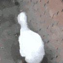

/ hhh / 11月 11 2021 听着隔壁老哥刹不住嘴的“哎，不对啊”，我就想笑。 因为程序员的这一声叹息饱含太多；因为，我也总是这样。 但凡遇到自己解决不了的bug，硬着头皮看了老半天，还是没解决问题的时候，突然灵感迸发，觉得这次一定行，但结果还是不行的时候，就会发出“哎，这~不~对~~~啊~~~”的叹息。 隔壁老哥已经“哎”了一下午了，哈哈哈。每次听到老哥洪厚低沉的一声叹息时，总感觉要笑不活了，虽然我也经常发出这样充满思考的一声叹息，但是还是觉得好搞笑。 